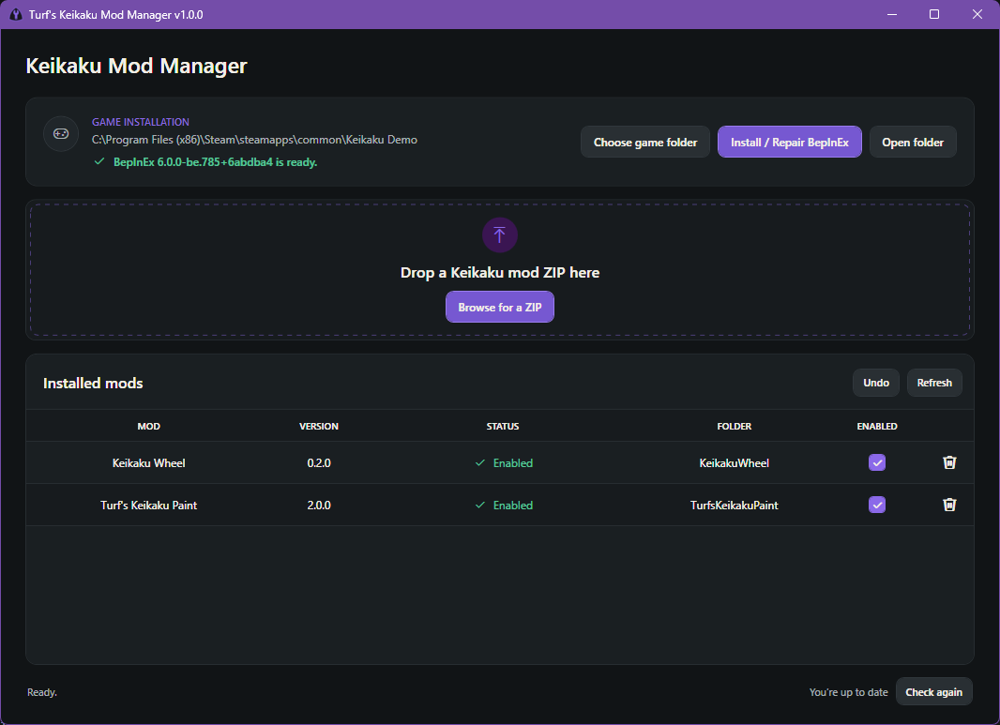

Keikaku Mod Manager
A simple mod manager for Keikaku Demo.
View Keikaku Mod Manager →Welcome to mods I make in my free time :)
Tools & Mods
A simple mod manager for Keikaku Demo.
View Keikaku Mod Manager →Change the colour of your RX7.
View Keikaku Paint →Installation
Recommended
The Mod Manager installs the supported BepInEx 6 build and makes it easy to manage your mods.
Download the Mod Manager ZIP and extract all of its files into a folder.
Open TurfsKeikakuModManager.exe.
If the game was not found automatically, choose the folder containing
Keikaku Demo.exe.
Click Install / Repair BepInEx if the Mod Manager says it is required.
Drag a Keikaku mod ZIP onto the window, or click Browse for a ZIP.
Manual installation
BepInEx 6
All mods are loaded with BepInEx 6. You only need to install it once, then you can manually install any compatible mod.
Download the supported BepInEx 6 Unity Mono build for Windows x64.
In Steam, right-click Keikaku and choose Manage, then Browse local files.
Drag and drop the contents of the BepInEx ZIP into the folder containing
Keikaku Demo.exe.
Open the game and close it again after reaching the main menu. BepInEx is now ready for mods.
Mods
With BepInEx installed, this step is literally drag and drop.
Choose the ZIP download on the mod's page.
Drag and drop the content of the ZIP folder into your Keikaku folder, where BepInEx is installed. You should see a new folder inside BepInEx/plugins with the mod's files in it.
The mod will load automatically through BepInEx. Instruction on how to use the mod in game are on each mods dedicated page.
Updating a mod is the same as installing fresh. Just make sure to either delete the old one, or choose overwrite when dragging the new one into the BepInEx plugins folder.
Mod
Preview and save independent exterior-panel colours and surface finishes from inside Keikaku Demo.

Start the game and press F8. Choose a panel, adjust its colour or finish, then save when you are happy.
Tool
A simple mod manager for Keikaku Demo. It allows you to easily drag and drop mod ZIPs to install them, and manage which mods are enabled or disabled. It also allows you to easily install BepInEx 6, or fix your broken install!

Download the latest release of Turf's Keikaku Mod Manager here!
Install instructions here